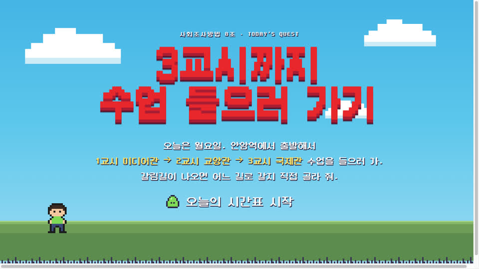
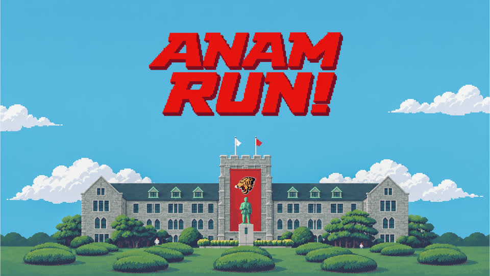
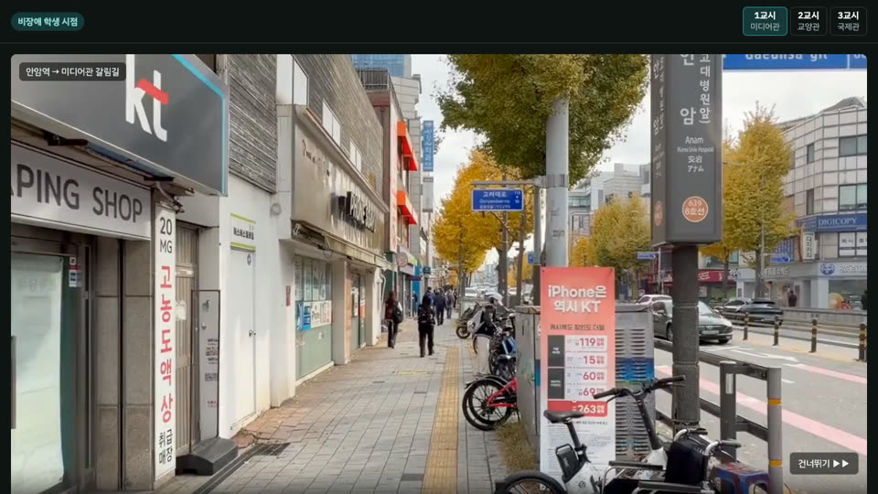
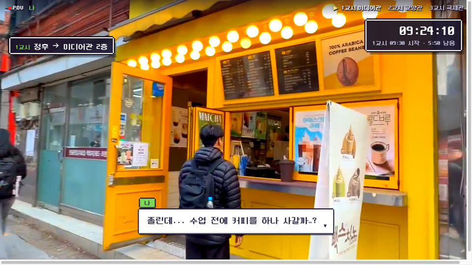
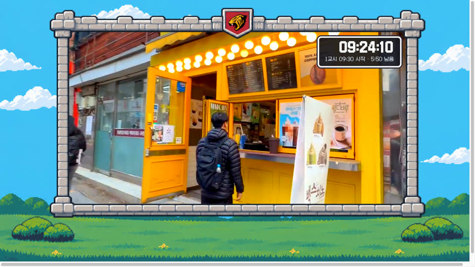

ANAM RUN! 제작 노트
사회조사방법 8조
왜 게임으로 만들었나
같은 시간표로 학교에 다니기
처음에는 비장애 학생과 휠체어 이용 학생의 등교 및 수업 간 이동 경로를 각각 촬영하고, 두 영상을 비교하는 방식을 생각했다. 하지만 이동 경로가 다르다는 사실을 보여 주는 것만으로는 우리가 촬영한 내용을 충분히 전달하기 어렵다고 판단했다.
가령 비장애 학생에게 계단은 여러 경로 중 하나다. 시간이 부족하면 계단을 이용할 수도 있고, 엘리베이터에 사람이 많으면 다른 길로 갈 수도 있다. 반면 휠체어 이용 학생에게는 애초에 선택할 수 없는 경로가 있다.
그래서 이동 경로 자체뿐 아니라, 경로를 선택하는 과정도 콘텐츠에 포함하기로 했다.
게임의 목표는 단순하다. 안암역에서 출발해 3교시까지 수업을 들으러 가는 것이다. 고려대 학생이라면 누구나 익숙할 법한 상황으로 설정했다.
1부에서는 비장애 학생의 시점으로, 2부에서는 휠체어 이용 학생의 시점으로 같은 시간표를 따라간다. 두 시점을 처음부터 나란히 제시하지 않은 것은 1부에서 관객이 어떤 기준으로 길을 선택하는지 살펴보고 싶었기 때문이다. 가까운 길, 익숙한 길, 사람이 적은 길을 별다른 고민 없이 선택한 뒤, 2부에서 그 선택이 여전히 가능한지 확인하는 구조다.
갈 수 없는 길을 어떻게 표현할 것인가
2부에서 계단이 있는 경로를 선택하면 GAME OVER 화면이 나온다. 이후 이전 선택지로 돌아가 다른 경로를 골라야 한다.
이때 실패한 것은 학생 개인의 이동 능력이 아니라 해당 경로를 이용하려던 시도다. 실제 휠체어 이용 학생은 그 길을 피하거나, 다른 사람에게 도움을 요청하거나, 별도의 경로를 찾아야 할 수 있다. 게임에서는 이러한 상황 중 경로를 변경해야 하는 경우를 표현했다.
물론 게임에서 선택지를 다시 고르는 것과 현실에서 이미 이동한 길을 되돌아가는 것은 다르다. 이 차이까지 구현하지는 못했다.
비교 조건
두 시점의 출발 시각과 수업 시간표, 목적지는 동일하게 설정했다.
| 구분 | 출발 | 수업 시작 | 목적지 |
|---|---|---|---|
| 1교시 | 09:21 | 09:30 | 미디어관 |
| 2교시 | 10:15 | 10:30 | 교양관 |
| 3교시 | 11:45 | 12:00 | 국제관 |
수업 시작 시각을 기준으로 출석과 지각을 판정하고, 마지막 화면에서 교시별 이동 시간을 비교한다. 다만 실제 촬영 당시의 이동 속도와 혼잡도까지 동일하게 통제한 것은 아니다.
이동 시간은 어떻게 계산했나
편집본이 아닌 원본 촬영 시간을 기준으로
촬영한 영상을 그대로 사용하면 게임 진행 시간이 지나치게 길어진다. 이동 구간은 빨리감기하되, 게임 속 시계에는 실제 이동에 소요된 시간이 반영되도록 했다.
이를 위해 편집본과 원본 촬영 파일의 장면을 0.5초 단위로 대조하고, 편집본의 재생 위치에 대응하는 원본 영상의 시간 정보를 정리했다.
비장애 학생의 이동 시간은 이 시간 정보를 그대로 사용했다.
휠체어 촬영: 밀어 준 시간을 그대로
휠체어 이동 영상은 촬영 당시 다른 조원이 뒤에서 휠체어를 밀어 주는 방식으로 촬영했다. 따라서 원본 영상에 기록된 시간은 휠체어 이용자가 혼자 이동하는 데 걸리는 시간보다 짧을 가능성이 크다.
처음에는 이 차이를 보정하려고 휠체어 자가 추진 속도와 경사면 추진에 관한 자료를 참고해 평지 1.3배, 경사 2배, 급경사 3배 같은 배율을 적용해 봤다. 하지만 이 숫자는 문헌에 그대로 나오는 값이 아니라 제작 과정에서 정한 추정치였고, 문헌의 실험 조건(실내, 짧은 거리, 숙련 사용자 등)과 캠퍼스의 조건도 달랐다. 근거를 충분히 만들 수 없다고 판단해 배율 보정을 빼고, 밀어 준 상태의 촬영 시간을 그대로 쓰기로 했다.
참고: 혼자 밀었다면
보정을 빼기 전에, 배율을 몇 가지로 바꿔 가며 같은 경로의 결과를 계산해 봤다. 게임에는 쓰지 않은 참고용 수치다. (1교시는 정후 → 2층 입구 경로 기준)
| 평지 · 경사 · 급경사 배율 | 1교시 | 2교시 | 3교시 |
|---|---|---|---|
| 1 · 1 · 1 (밀어 준 그대로, 게임에 쓴 값) | 지각 1:37 | 여유 8:46 | 여유 8:01 |
| 1.0 · 1.5 · 2 | 지각 2:30 | 여유 8:40 | 여유 5:53 |
| 1.3 · 2 · 3 | 지각 4:26 | 여유 7:20 | 여유 2:39 |
| 1.5 · 2.5 · 4 | 지각 6:01 | 여유 6:25 | 지각 0:12 |
어떤 값을 넣어도 결과는 늦어지는 방향으로만 바뀐다. 1교시는 밀어 준 그대로도 지각인데, 미디어관 엘리베이터 대기(5분 20초)가 대부분을 차지하기 때문이다.
참고한 자료
- 휠체어 자가 추진 속도 관련 연구 (PMC3058839)
- 야외 보도에서의 휠체어 추진 부담 (UTMB)
- 경사면 휠체어 추진 관련 자료 (SCIRE)
- 휠체어 이동 속도 관련 논문 (Massey University)
엘리베이터를 기다리는 시간
엘리베이터 대기 시간도 촬영된 시간을 그대로 썼다. 기다리는 동안은 누가 밀어 주든 혼자 밀든 걸리는 시간이 같다.
촬영 과정에서 특히 눈에 띈 것은 미디어관 엘리베이터였다. 엘리베이터에 사람이 많아 두 차례 탑승하지 못했고, 대기와 탑승을 포함해 5분 20초가 소요됐다. 계단을 이용할 수 있다면 다른 경로를 선택할 수 있지만, 계단을 이용할 수 없는 경우에는 기다리는 것 외에 마땅한 대안이 없었다.
게임에서는 이 구간의 영상 재생 속도를 낮추고, 대기 시간을 별도로 표시했다. 이동 장면과 마찬가지로 짧게 편집하면 기다림이 이동 시간에 포함된다는 사실을 관객이 알아차리기 어렵다고 판단했기 때문이다.
| 촬영 구간 | 대기 및 탑승 시간 |
|---|---|
| 미디어관 2층 → 4층 | 5분 20초 |
| 2교시 출발 · 미디어관 | 1분 18초 |
| 3교시 출발 · 교양관 | 1분 10초 |
| 미디어관 1층 경로 | 51초 |
| 2교시 · 교양관 | 37초 |
게임에서 나타나는 이동 시간 차이
다음은 특정 경로를 선택했을 때의 결과다. 실제 플레이에서는 선택한 경로에 따라 달라진다.
| 교시 | 비장애 학생 | 휠체어 (밀어 준 기록) | 시간 비율 |
|---|---|---|---|
| 1교시 미디어관 | 4분 34초 | 10분 37초 | 2.3배 |
| 2교시 교양관 | 52초 | 6분 14초 | 7.2배 |
| 3교시 국제관 | 3분 19초 | 6분 58초 | 2.1배 |
이 경로에서는 휠체어 학생이 1교시에 1분 37초 지각하고, 2교시와 3교시에는 수업 시작 전에 도착한다.
주목할 만한 것은 가장 멀리 떨어진 건물이 아니라 미디어관과 교양관 사이에서 이동 시간의 비율 차이가 가장 크게 나타났다는 점이다. 비장애 학생에게는 바로 옆 건물로 이동하는 짧은 거리지만, 휠체어로 이동할 때는 이용 가능한 경로가 달라진다.
이동 시간의 절대적인 차이뿐 아니라, 물리적으로 가까운 두 장소가 이동 방식에 따라 전혀 다른 거리가 될 수 있다는 점을 보여 주고자 했다.
지각보다 '여유 시간'
지각 여부만 보면 두 학생의 차이는 1교시 한 번뿐이다. 하지만 수업 시작 전에 남는 시간을 비교하면 다르게 보인다.
예시 플레이 기준. 빗금은 밀어 준 덕분에 생겼을 수 있는 여유(혼자 밀면 줄어드는 쪽), 빨간 빗금은 혼자 밀면 더 늦어지는 쪽이다. 빗금 길이는 계산한 값이 아니라 방향만 보여 준다. 1교시 휠체어의 붉은 막대는 남은 시간이 아니라 지각한 시간이다.
비장애 학생은 일찍 도착해서 커피를 사거나, 화장실에 들르거나, 친구와 이야기를 나눌 수 있다. 휠체어 이용 학생은 같은 시간표를 소화하더라도 그러한 여유가 줄어들 가능성이 있다.
다만 여유 시간에 실제로 무엇을 하는지는 이번에 조사한 내용이 아니다. 이동 방식에 따라 수업 사이 시간을 쓰는 자율성이 달라지는지는 후속 연구 질문으로 남긴다.
화면 및 게임 디자인
타이틀 화면
초기 제목은 '같은 길, 다른 거리'였다. 검은 배경에 글씨가 나오는 다큐멘터리 형식의 화면으로 제작했다.
이후 관객이 직접 경로를 선택하는 구조가 구체화되면서 화면도 게임의 형태로 바꾸기 시작했다. 제목 역시 조사 주제를 직접 드러내는 문구에서 '3교시까지 수업 들으러 가기', 최종적으로는 'ANAM RUN!'으로 변경했다.
픽셀 그래픽을 사용한 것은 실제 촬영 영상과 게임을 구성하는 요소를 시각적으로 구분하기 위해서이기도 했다. 실제 이동 장면까지 모두 일러스트로 표현하면 촬영한 현장의 정보가 사라지기 때문에, 영상은 실사로 남기고 그 바깥의 인터페이스에 게임 그래픽을 적용했다.
이미지 에셋 제작
레트로 픽셀 게임의 타이틀 화면을 레퍼런스로 사용했다. 실제 고려대 본관 사진을 바탕으로 배경을 만들고, 타이틀 로고와 캐릭터, 인게임 프레임 등을 별도로 제작했다.
초기 생성 이미지들은 픽셀아트라기보다 일반적인 일러스트에 가까웠다. 레퍼런스와 비교했을 때 색의 종류가 많았고, 불필요한 윤곽선이나 명암 표현도 많았다.
이를 수정하기 위해 레퍼런스 이미지의 주요 색상값을 추출하고, 도트의 크기와 색상 범위, 윤곽선 등을 여러 차례 조정했다. 로고가 들어갈 공간을 확보하기 위해 본관 건물의 크기와 하늘의 비율도 수정했다.
달리기와 휠체어 이동 캐릭터는 각각 여러 동작으로 구성된 스프라이트 시트 형태로 제작했다. 두 캐릭터 모두 고려대 과잠을 입고 있으며, 같은 게임에 등장하는 학생으로 보이도록 그림체와 옷차림을 통일했다.
인게임 화면
인게임 화면을 제작할 때는 영상의 크기와 가독성을 우선적으로 고려했다. 처음에는 영상 주변에 여러 장식과 버튼을 배치했지만, 실제 화면에 적용했을 때 영상보다 인터페이스가 먼저 눈에 들어오는 문제가 있었다.
최종적으로 학교 건물을 배경에서 제외하고 하늘, 구름, 잔디만 남겼다. 영상 프레임에는 고려대 본관의 석조 건물을 연상시키는 벽돌 디자인을 적용했다.
장소 안내창과 시계창은 연한 청회색의 입체적인 픽셀 버튼을 참고해 제작했다. 대화창과 선택지 역시 같은 화면 안에서 이질적으로 보이지 않도록 색상과 테두리, 글꼴을 조정했다.
쓰지 않은 것과 그 이유
- 코드로 그린 배경: 돌계단과 본관을 코드로 직접 그려 봤지만 레퍼런스의 밀도와 질감을 따라가지 못했다.
- Higgsfield 시안: 생성 이미지가 너무 매끈해서 해상도와 색 수를 줄여 봤지만 여전히 픽셀아트처럼 보이지 않았고, 캐릭터 얼굴도 뭉개졌다. 결국 GPT로 직접 만든 에셋으로 바꿨다.
- 기본 아이콘·글꼴: 체크 표시 같은 기본 아이콘과 처음 쓴 픽셀 글꼴은 "AI가 만든 사이트" 같은 인상을 줘서 픽셀 아이콘과 둥근모꼴로 바꿨다.
- 금속 버튼·남색 창: 창과 버튼의 재질이 따로 놀고 버튼 글씨가 잘 읽히지 않았다.
- 진한 빨강: 대화창 이름표와 선택창 빨강이 너무 쨍해서, 로고 빨강에서 색을 뽑아 채도를 낮췄다.
- 휠체어 속도 배율: 혼자 미는 속도로 환산하려고 평지 1.3배·경사 2배·급경사 3배를 적용했지만, 숫자의 근거가 약해서 빼고 밀어 준 촬영 시간을 그대로 썼다.
- 틀 그림자: 벽돌 틀에 그림자를 넣었더니 영상 안쪽에도 그림자가 져서, 바깥쪽에만 생기게 고쳤다.
모든 결정에 이유가 있었던 것은 아니다. 상당수는 실제 화면에 띄워 보고 보기 좋지 않아서 고쳤다.
화면 발전 경과
2026년 11월 21일부터 24일까지의 작업 과정을 버전별로 정리했다. 각 이미지는 당시의 코드를 다시 실행해 캡처한 것이다.
타이틀 화면








인게임 화면








AI 사용 기록
AI는 크게 사이트 구현, 이미지 제작, 영상 후처리, 자료 조사에 사용했다.
| 도구 | 활용 내용 |
|---|---|
| Claude Code | 사이트 코드, 화면 전환, 선택지 분기, 타이핑 효과, 효과음 및 배경음 합성, 자동 모자이크 구현, 영상 시간 대조, 이동 속도 관련 자료 조사 |
| GPT 이미지 생성 | 타이틀 로고, 픽셀 배경, 벽돌 프레임, 장소 안내창, 시계창, 달리기 및 휠체어 스프라이트 제작 |
| Higgsfield | 초기 배경과 캐릭터 시안 제작. 최종 화면에서는 GPT로 제작한 에셋으로 교체 |
촬영과 이동 경로 설정, 게임의 전체 구성 및 자막 문구에 관한 판단은 조원들이 담당했다. 사이트 구현과 그래픽 제작에는 AI를 적극적으로 활용했으며, 생성된 결과물을 검토하고 수정하는 작업을 반복했다.
AI가 제안한 결과물을 그대로 적용하기 어려운 경우도 있었다. 영상 재생 시간과 실제 이동 시간이 일치하지 않거나, 지각했음에도 STAGE CLEAR가 표시되는 등 게임의 설정과 맞지 않는 문제가 발생했다. 이미지 제작에서도 도트의 크기나 색상, 캐릭터 동작이 일관되지 않아 수정이 필요했다.
특히 이동 시간 계산에서는 AI와 함께 휠체어 속도 배율을 정해 적용해 봤지만, 근거를 충분히 만들 수 없어 최종적으로는 빼고 실제 촬영 기록만 쓰기로 했다.
주요 요청 내용
- 비장애 학생의 평범한 등교 과정으로 시작한 뒤 휠체어 이동 시점을 공개하는 구조
- 원본 촬영 시간을 반영한 게임 시계 구현
- 휠체어 촬영 방식에 따른 이동 시간 보정
- 평지와 경사로의 배율 구분
- 엘리베이터 대기 시간 별도 표시
- 지각 여부에 따른 결과 화면 분기
- 교시별 이동 시간 비교 그래프
- 촬영 영상 속 행인의 얼굴 모자이크
- 레퍼런스 기반 픽셀 그래픽 및 UI 제작
전체 프롬프트와 AI 답변, 제작 단계별 화면은 별도로 첨부했다.
▶ AI와 나눈 대화 전체 기록 보기 (프롬프트 + AI 답변)
사이트 제작 프롬프트 전체 기록 (136개) 펼치기
2026-11-21 ~ 11-25, Claude Code에 보낸 요청 원문 그대로 (시간순, 한국 시간). 링크·이메일은 가리고 비속어는 모자이크함.
- [링크]
이 드라이브에 기획안이랑 컷편본 있고 와이어프레임 있거든? 너 드라이브에서 영상 다운로드 가능? 다운로드해서 초안이랑 와이어프레임 참고해서 웹사이트 제작 가능? - 음? 드라이브에 있는데 안보이면 데스크탑에 두 파일 다 다운로드했어
- A. 노트북에서 여는 사이트 (추천): 영상을 받아서 용량을 줄이고, 폴더째 열면 바로 돌아가게 만들어. 발표장 인터넷이 안 돼도 끊기지 않아. 근데 이렇게하면 내 노트북에서만 열수있는거아니야?
- 흠인터넷에 올려야돼
- 압축을 해보자 파일을
- ㅇㅇ그리고 뭐 안내멘트? 뭐 어디 들어왔다. 근데 막혔다. 실패! 이런 멘트들도 넣어줘야돼
- 그리고 디자인도 다른 사이트들 좀 참고해서 레퍼런스 찾아서 예쁘게만들어줘
- 영상안보이는디?
- 재생눌러도안보여
- 흠... 일단 첫영상에서 갈림길이 나오고 한번 두리번 좌우로 패닝한 뒤 정지가 되면서 선택지가 나와야돼
- 흠... 해보니 문제점이 몇가지 있어 1번 비장애인 시점 영상과 2번 장애인시점 영상 컷편집 방식이 다르네... 2번 장애인시점은 주로 배속, 주요 구간만 원배속으로했고 1번 장애인시점은 불필요한 컷을 잘랐더라고 1번도 2번과 비슷한 컷편집 방식으로 바꾸고 싶은데 니가 할수있어?
- 아 그리고 영상들 소리 다 죽여
- 너 근데 비장애인시점 원본 어딨는지알아? 지금은 컷편본이라 이걸 배속감으면 안돼
- [링크] 이 링크에서 소유자가 [이메일] 돼있는 파일들이란다... 근데 각각 어떤 건지는 네가 대조해봐야돼
- 근데 이거 배속 장애인시점이랑 똑같이 걸린거야? 약간 느린거같기도 한데? 글고 비장애인시점 미디어관1층으로가기 이거는 쭉 배속 걸어도 ㄱㅊ을거같네 뭐 미디어관모퉁이도는거, 엘베타는거1번, 빼고는 걍 쭉 배속걸자 너무 느리다
- 그리고 엘베 타고 4층 도착해서 어디 교실에 도착했다가 영상이 끊기고 다시 시네마트랩에 들어가는데 걍 엘베 내리고 바로 시네마트랩으로 가게해줘
- 비장애인시점 국제관도 국제관들어와서 엘베앞에서 망설이는거 빼고 바로 다음영상인 강의실로 들어오게해줘
- ㅇㅇ 3번도 그렇게 해주고 모퉁이마다 배속 풀필요 없어 중요한데만 남겨놓고 다 배속하고 배속풀기 앞뒤로 2-3초정도는 배속푼채로 두자
그리고 하단에 재생바?도 만들어서 영상 이동할수있게도 해주고 그건 마우스 대면 나오도록 해줘. 그리고 뒤로가기 버튼도 만들어줘 - 11시까지보내기로했는디...
- 얼마나남음?
- 와 그리고 그러기전에 일단 이거 링크있으면 공유가능하게해봐 그게 먼저
- 한국어로 ■■■■■
- 아니 ■■ 화면에 하얀 박스가 너무 많잖아
- 그리고 선택지는 하얀박스 말고 걍 하얀폰트로 해줘
- 수정하면 바로 배포해줘
- 한국어로 말하라고
- 야 그 사이트에서 ㅈ수정한 거 자막 저장이 안되네
- 다운받아서 데스크탑으로옮겼단다?
- 흠 디자인을 좀 수정해보자. 전체적으로 약간 픽셀게임 느낌이 났음 좋겠어. 내가 방금 데스크탑에 다운받은 11개의 이미지를 참고해서 웹사이트의 모든 디자인을 수정해줘
- 효과음도 넣어줘 그리고 안내창이랑 글자크기 좀만 더 키워주고, 갈림길때 글씨는 아래 말고 가운데에 있게해줘. 그리고 재생바는 없어도 될듯?
- 그리고 이 사이트를 발표하며 알아야할점은... 장애vs비장애 구도로 처음부터 시작하는게 아니라 평범한 캠퍼스 투어인척하다가 도착 후에 그럼 이제 다른 학생의 시점을 한번 알아볼까요? 라고하며 장애학생의 시점을 보여주는 약간의 반전이 있어야돼
- 그리고 아이콘 같은 거 있잖아 뭐 체크 아이콘... 이런거 기본아이콘으로 쓰면 너무 클로드같아서 이것도 픽셀화해주든가 안되면 걍 빼줘
- 그리고 영상 사이사이 검은화면 뜨는데 왜이러는거야?
- 글고 휠체어 1교시 지각하는 거 뭐 1분지각으로는 택도없으니까 한 12분정도 지각하게해줘
- 아직 반영이 안된거지?
- 아 캠퍼스투어가 아니라 3교시까지 수업들으러 가기인데 이걸 어떻게 제목처럼 만들수잇지
- 아니 애초에 같은 길,
다른 거리 이게 제목이면 안된다니까는 - 흠 근데 색깔이나 그래픽이 아직도 약간 클로드 느낌이 있어서 좀만 더 손봐줬음 좋겠어
그리고 영상... 이 너무 밤틴데 흠... 채도를 좀 높여서 게임느낌을 넣어볼까?... 흠... 방법이 없을까? - 그리고 너 혹시 영상 모자이크도 할수있어? ㅜㅜ 얼굴이 너무 적나라하게 찍힌 행인들만 모자이크를 좀 해주면 좋을거같은데
- 야 근데 영상 도트필터 끈게 기본이고 눌러서 켤수있게하고 시계 디자인 뭐 장난하자는거냐?
- 그리고 1교시 끝! 마다 나오는화면이 왜 밤이야? 밤이면 안된지
- 첫화면 검은글씨 왜이렇게깨져?
- 흠 아직도 디자인이 약간 클로드같네... 색감이나 글씨폰트 요런느낌으로 한번 해볼래? 73070870226982a0854a75764dfc7e5b.gif
- 그리고 모자이크 좀만 더 정확하게 해주라
- 언제다돼?
- ㅇㅇ 끝나면 바로 올려줘
- 그럼 지금 올라가는 중인게 모자이크만 수정된거지?
- 그 시작화면이랑 교시끝마다 나오는 화면들 퀄리티가 넘 낮아 내가 아까 준 모브싸이코? 수준으로 퀄좀 올려줘
- 시계 그렇게 하고, 화면에 뜨는 글씨들은 게임 선택창? 아이템창? 처럼 구현해줘 퀄리티는 방금 요청한 것처럼 올려서
- 그리고 시계는 박스 안에 있는게 더 잘보이긴 하네
- 아니 일러스트로 하되 모브사이코 느낌으로 바꾸랬지 언제 화면을 캡쳐하랬어? 일단 교시끝 화면은 이대로 두고 게임시작화면, 휠체어시작화면은 원래 일러스트 느낌으로 바꿔줘 근데 퀄리티 업 많이 한
- 그리고 선ㅊ택지는 위아래로 있는거보다 아까처럼 좌우로 있는게 좋을거같아 한국어로말하랬지
- 음... ■■■■하지말고 73070870226982a0854a75764dfc7e5b.gif 이거 일러스트 스타일 완전히 모방해줘 글씨체도 해당 느낌의 한글폰트로 바꾸고
- 235165_120728_2620.jpg 그 일러스트 스타일로 이거 고려대 그려서 띄워주고 캐릭터도 같이 띄워줘
- 그리고 버튼들은 4bb120804cff21f2e7d3a0f23f8cfcd2.jpg 이거 참고해 글씨나 효과는 이거 참고하고 bc5338d55c00cb263a4f34630d996cff.jpg
- 시작이랑 전환화면들 퀄리티 좀만 더 높여줘 특히 캐틱터 이미지... 그리고 색감도 이거 완전 따라갔음 좋겠어 73070870226982a0854a75764dfc7e5b.gif
- 아니 버튼만 수정하는게 아니라 시계랑 안암역>갈림길 이런것도 좀씩 손봐줘야지
- 그리고 창은 남색인데 버튼이 금속느낌이라 어색하고 버튼 속 글씨가 잘 안읽혀
- 그리ㅣ고 국제관 올라가는거 ■■ 한참걸리니까 이것도 한참지각으로 해줘
- 바뀐거 다좋은데 갈림길에서 미디어관으로 가는 길, 어디로 갈까? 이 글씨 왤케 테두리가 번져있는거같지? 읽기 불ㅎ편해
- 그리고 자막이랑 문구 전반적으로 수정하게 그 수정 사이트 한번 더 열어주라 최신 버전으로
- 방금 자막 수정하고 파일 내려받았어
- 좀만 더 73070870226982a0854a75764dfc7e5b.gif 이거랑 가깝게 수정해줘 스타일, 캐릭터, 폰트(특히. 지금 구려), 색감
- 전체적으로 좀 더 퀄리티 좋은 게임처럼 보이게 하려면 어떻게 하면 좋을까? 지금 약간 아쉬운디.
- 힉스필드로 생성을 하자 근데 제목이 좀 더 깔쌈했음 좋겠어 뭐 예를들어 수업가자! 나 지각금지! 같은거
- 제목 ㅊ천좀해봐 지각금지 말고 더 깔쌈한거
- 아니 잠만 만들이마봐
- 안암런 ㄱㄱ
- 그리고 런에 RUN이걸로 써줘
- ㅇㅇ 걷기 애니메이션 만들어줘
- 아 잠만
- 전혀 이늒낌이 아니잖아 73070870226982a0854a75764dfc7e5b.gif
- 그리고 지금배경 캐릭터까지 ■■ 지피티같아
- 버튼으로는 해줘 텍스트 잘 안보임
그리고 캐릭터 ㅓㄹ굴이 너무;;뭉개졌고
배경은 일단 뭐 ㅇㅋ인데 너 로고 ■■■■밖에 못만드냐? - 그리고 색ㄱ감이랑 캐릭터 스타일 좀만 더 이럴게가자
73070870226982a0854a75764dfc7e5b.gif - 아 미감이 왜이렇게■■■■ 내가 지피티로만들어서넣어뒀으니까이걸로한번얹어봐 안암런 폴더에있고 이거기본으로 배경 움직이게도 할수있냐?
- 아... ■■■ 3교시까지수업들으러가기 글씨 걍 빼고 내가 준 합본처럼 로고만 박으라고 그리고 구름 말고 다른것도 움직이게 못해?
- 그리고 구름 가운데에 ㅜ먼 선 있음
- [Image #1] 그리고 캐릭터 이걸로 해서 뛰는 모션으로 넣어줘
- 휠체어 라이더 픽셀 애니메이션.png 휠체어 캐릭터는 이걸로 바꿔줘
- 엄... 그리고 게임시작 버튼 한번 버튼빼고 레ㅊ퍼런스처럼 텍스트만 한번 넣어볼까? 하얀색으로
- 아니 그리고 애가 움직이지 말고 같은자리 우하단에서 걍 멈춰서 뛰는거처럼 해줘
- 안암런 로고 쪼끔만 더 밑으로 내리자 그리고 캐릭터가 좀만 더 우측으로 가게해줘 건물 옆쪽 하늘에 위치하게
- ㅇㅇ 그리고ㅜ...이제 이 배경 그림체에 맞춰서 게임 내부 화면들도 맞추자 색감, 버튼, 폰트, 창 다
- 그리고 오늘의 시간표를 눌러야 나오는게 아니라, 화면 한가운데 게임시작 버튼(버튼으로 넣어줘 ㅎ)ㅂ만 있고, 누르면 다음 화면에 게임튜토리얼처럼 오늘의시간표의 설명이 나오는걸로 하자 글자도 한글자씩 나오게... 그리고 그 다음에 게임이 ㄹㅇ 시작하는거지
- 그리고 게임시작 말고 등교 시작! 으로 가자
- 결과 화면도 같은 그림체로 바꿔줘
그리고 그... 휠체어 전환화면에섴ㅋㅋ 휠체어 속도가 너무빨라서 경박스러워 좀 천천히해봐 - 버튼너무크고 좀 내려주라 등교시작버튼...
- 그리고 튜토리얼에 글씨
국제
관
이렇게 잘리게하지말고 폰트크길 좀 줄이든가해
골라
줘 도 마찬가지고
그리고 걍 대화창? 텍스트창을 밑으로 쫙 넓게깔고 캐릭터를 건물위쪽 가운데로 올려 - 아... 게임화면이 왜이렇게 밤티지? 흠... 일단 놔두고
[붙여 넣은 글]
여기서 휠체어 선택하면 휠체어 캐릭터가 갑자기 멈춤 - ㅋㅋㅋㅋㅋ 튜토리얼에서 캐릭터 크기 좀 줄여서 대화창 오른쪽 위쯤에 두자
- 아... 그리고 게임내부화면을 어케손볼지 생각좀 해볼테니까 너는 아까 그 하면좋은 6가지? 그거좀 해봐
- ㅇㅇ 반전 음악도 넣어줘
- ㅇㅇ 결과 화면 음악도 넣어줘
근데 뭐 언제? 자막이 뜰 때 한 글자씩 타닥타닥 나오고, 두 글자마다 작게 "삑" 소리가 나. - 그리고 그 처음에 검정으로 원으로줄어들면서 화면전환 ㄷㅚ잖아 그 원을 가운데에 두지말고 캐릭터를 중심으로 둬서 캐릭터를 마지막으로보여주면서까맣게되도록 뭔말알?
- 그리고 그럼 걍 튜토리얼은 까만배경에 대화창만뜨게하자
- 흠... 그 게임 화면을 일단 이런식으로 해볼까?
cc02496071300bbb707160bb957fff63.jpg
59da92d6ea46dfdc998290001e79cbab.jpg
검정배경, 네모 안에 우리 영상이 있고, 그 위로 대화창이 크게... 올라오는 식으로 - 그리고 첫화면 캐릭터중심 원 하고 까만화면 한 2초 있다가 대화창이 올라오는효과 나오도록, 그리고 튜토리얼 끝나고는 배경이 검정이라 원그리며 전환되면 약간 어색한데 다른 효과 없을까?
- ㅇㅇ 교시 끝에도 페이드로 해줘
- 자 화면 수정하자 안암런 폴더에 인게임 합본 확인해주고 인게임 배경과 인게임 틀 이미지 쓰렴 그리고 대화창은 튜토리얼에서 썼던거 그대로 가져와
- 화면크기너무작음
- 그리고 튜토리얼스킵버튼만들어줘
- 야 인게임 이미지 어떻게 변천했는지 보여줘 이미지로
- 야 근데 왜 안나와 음악?
- 메인페이지 변천사도 보여줘
- 노래가 자꾸 끊긴다니까 영상화면나오면
- 그리고 선택지가 왜 눌려있는거야?
- 영상 나올 때만 음악을 조금 작게 낮추는 것도 바로 할 수 있어 🔉 이렇게 ㄱㄱ
- 근데 일부러 나라는 글씨랑 얼굴그림을 겹쳐둔거야? 대화창에서?
- 그리고 선택지가 아직도 첫화면부터 빨간색으로 ■■■■■■ ■■■■
- 아니 그리고 음악이 아예 멈춘다고 인게임으로 들어가면 지금 작아지는 정도가 아니라
- 그리고 첫 갈림길이 나왔다! 자막 영상 한 3초만 더 빨리 끊고 바로 선택지 나오게해줘
- 한국어■■■■
- 너 한번만더영어쓰면지피티로갈아탐ㅅㄱ
- 어 해주고 그 대화창에 나 글씨랑 내 얼굴이랑 겹치는건 해결 안해? 그리고 선택지에서도 음악 커지지 말고 작게 유지하고 첫화면, 전환때만 커지셈
- 그리고 흠... 비장애인시점은 좀 후루룩 지나간뒤에 장애인시점이 중요한데 비장애인 템포가 좀 느린거같아 좀만 더 속도감이 있음 좋겠는데 전체적으로...
- ㅈ;금 걷기 쪽 영상 전부 1.4배속이야. 이게 원배속으로 돌던것도 싹 1.4배로 돌렸단거야?
- 인게임 배경이랑 틀 갈음해줘
- 새로 저장해둬서 그 이미지로 다시 넣으면 돼
- 아니 지금 속도 좋음 근데 흠... 그 틀 윤곽선이 없는 대신에 외부그림자? 바깥으로? 라도 좀 되게해봐 배경이랑 너무 구분이 안되네
그리고 인게임 대화창이랑 선택창 윤곽선 좀만 줄여봐 지금의 반정도? - 인게임 버튼.png이랑 버튼얹음 그림 참고해서 바꿔줘
- 벽돌틀 그림자가 안쪽에는 안생기게해야지 ㅡㅡ 그리고 버튼 너무 크고 틀에 가깝게 붙어있어
- 그리고 지금 폰트가 너무 에이아이 폰트야 내가 첨부한 것처럼 글씨체 해주면 안돼? 인게임 버튼.png 에 있는 글씨
- 그리고 지금 선택창 대화창에 있는 빨강 넘 찐해 그니까 그 안암런 로고 빨강에서 색상코드 뽑아서 그색으로 해줘 약간 채도좀만ㅈ낮앗음좋겠네
- STAGE 1 CLEAR! 이거 지각했는데 뜨면 안되지
그리고 시계 리얼타임으로 가자
원본 영상 알지? 그 시간 반영해서 시계 흐르게 해줘
둘 다
내가 지금까지 시계에 대해 했던 말들은 일단 잊어보고
이렇게 하면 엔딩이 어떻게 되는지 적용하고 맗줘봐
15분 넘게 촬영한 본이 없었나? - 아... 촬영시엔 뒷사람이 휠체어를 밀어준걸 감안해서 계산해줘
- 그니까 게임속 휠체어는 혼자 휠체어끌고가는거니까 더 오래걸려야한다는 소리지 얼마나 오래걸릴지는 니가 한번 생각해봐
- 오르막 2배 평지 1.3배로 나눠서 해줘
- 흠 좋은데 국제관 올라가는데 10분밖에 안걸린다고? 말도안돼 좀 더걸릴거같은데?
그리고 엘베 대기도 리얼타임으로 해줘야지 - 비장애인 시간은 어떻게돼? 리얼타임이야?
- 조금 더 전체적으로 퀄리티를 높일수있는 방법이 있을거같아?
- ㅇㅇ 다 수정해주고 엘리베이터는 대기할때에 배속 조금씩 더 풀자
그리고 4번은 걍 지금이 나을거같은데 결과창 스크롤 내리면 밑에 파란화면만 나와서 오류처럼 보여
나머지는 다 수정하자
8번은 안해도 ㄱㅊ고 - 그리고 그거 돌아가는동안 병렬로...
왜 이렇게 만들었는지? 에 대한 페이지도 추가해줘
왜 게임이라는 연출인지, 배율은 어떤 근거인지, 에이아이 사용기록과 프롬프트, 어떤게 한계인지, 어떤 단축키나 기능이 있는지, 등등 발표자가 함께 설명하면 좋은것들... - 그리고 에이아이 사용기록 할때는 이미지 발전 경과도 함께 넣어줘 발전 경과 이미지 기준은 메인페이지 배경으로, 지금까지 나왔던 이미지 기록들 다 포함해서
- 흠 나 이름표는 빨간게 나은데
- 주요 프롬프트 (요청을 짧게 다듬음)
이거는 클릭하면 프롬프트 전테를 볼수있게 해줘. 비속어는 모자이크해주고
작업의 한계
이번 작업을 통해 확인한 것은 특정 시간대에 정해진 경로를 이동하면서 발생한 문제들이다. 이를 고려대 캠퍼스 전체의 이동 환경이나 모든 휠체어 이용 학생의 경험으로 일반화할 수는 없다.
첫째, 반복 촬영을 하지 않았다. 특히 엘리베이터 대기 시간은 수업 시간대와 혼잡도에 따라 달라질 수 있다. 미디어관에서 기록한 5분 20초가 평소에도 발생하는 대기 시간인지는 확인하지 못했다.
둘째, 휠체어 이용자가 혼자 이동한 시간이 아니다. 다른 사람이 밀어 준 상태의 촬영 기록을 그대로 썼기 때문에, 실제 자가 추진 시간보다 짧게 잡혔을 가능성이 크다. 실제 휠체어 이용자의 신체 조건, 추진 숙련도, 휠체어의 종류 등에 따른 차이도 반영하지 못했다.
셋째, 이동 경로의 경사도를 측정하지 않았다. 혼자 밀 때 오르막이 얼마나 더 부담이 되는지는 게임에 반영되지 않았다.
넷째, 게임은 이동의 어려움을 주로 시간과 경로의 문제로 표현한다. 그러나 실제 이동 과정에서 발생하는 피로, 안전에 대한 우려, 타인에게 도움을 요청하는 부담 등은 이동 시간만으로 설명할 수 없다. 게임을 플레이했다고 해서 휠체어 이용자의 일상적인 경험을 이해하게 됐다고 말하기는 어렵다.
다섯째, 게임에서 경로 선택에 실패하면 이전 선택지로 돌아갈 수 있다. 현실에서는 길을 잘못 선택했을 때 되돌아가는 데 추가적인 시간과 체력이 필요하다. 이러한 비용은 충분히 구현하지 못했다.
마지막으로 영상 속 행인의 얼굴은 자동 모자이크 방식으로 처리했다. 얼굴 인식 및 추적 과정에서 일부 프레임의 모자이크가 누락될 가능성이 있다.
후속 조사를 진행한다면 실제 경사도를 측정하고, 동일한 경로를 여러 시간대에 반복해서 이동해 볼 필요가 있다. 무엇보다 실제 휠체어 이용 학생이 어떤 기준으로 이동 경로를 선택하는지, 평소에는 어떤 방식으로 이동 시간을 확보하는지, 수업 사이 여유 시간을 어떻게 쓰는지 직접 들어보고 싶다.
조작법
| 키 | 기능 |
|---|---|
| Space | 영상 재생 및 일시정지 |
| → | 현재 영상 건너뛰기 |
| Backspace | 이전 화면으로 돌아가기 |
| M | 소리 켜기 및 끄기 |
| P | 영상 픽셀 필터 켜기 및 끄기 |
| 방향키 + Enter | 메뉴 및 선택지 이동, 선택 |
- 브라우저 정책상 화면을 한 번 클릭해야 소리가 재생된다.
- 튜토리얼은 오른쪽 상단 버튼으로 건너뛸 수 있다.
- 영상을 건너뛰어도 이동 시간은 설정된 시간 정보를 기준으로 계산된다.
- edit.html에서 자막과 선택지를 수정할 수 있다. 수정 내용은 subs.json으로 내려받는다.
- 변경 사항이 반영되지 않으면 강력 새로고침(⌘+Shift+R 또는 Ctrl+Shift+R)을 실행한다.
발표 시 참고 사항
1부에서는 게임의 목표와 조작법만 설명하고, 이동 경로 선택을 관객에게 맡긴다.
2부에서는 1부에서 선택했던 경로를 다시 이용할 수 있는지 확인한다. 계단을 선택했을 때 나오는 GAME OVER 화면과 엘리베이터 대기 장면을 중심으로 설명한다.
결과 화면에서는 단순히 몇 배의 시간이 걸렸는지를 강조하기보다, 왜 가까운 건물 사이에서도 이동 시간 차이가 발생했는지 촬영한 경로를 바탕으로 설명한다.
이동 시간에 관한 질문이 나오면, 게임 속 휠체어 시간은 사람이 밀어 준 실제 기록이고 혼자 밀었다면 더 늦었을 것이라는 점을 먼저 말한다. 이번 작업은 휠체어 이용 학생의 평균적인 이동 시간을 측정하거나 장애인의 경험 전체를 재현하려는 작업이 아니다. 특정 캠퍼스 동선에서 이동 방식에 따라 달라지는 경로와 시간의 문제를 관찰하고, 이를 관객이 직접 선택해 볼 수 있는 형태로 구성한 작업이다.